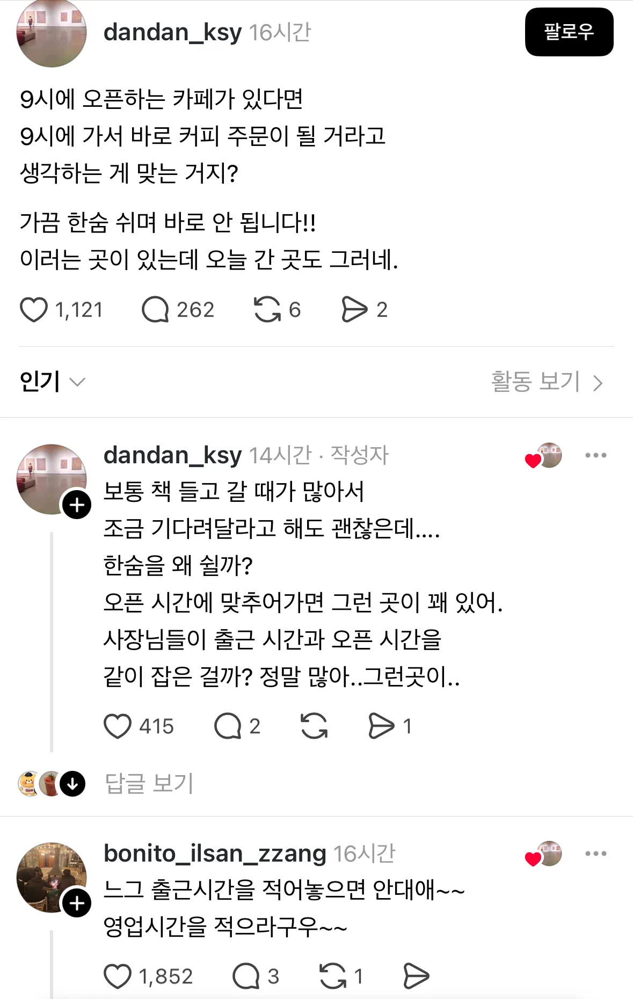

하겠습니까
사장이면 최소 10분전엔 출근해서 준비해라 돈벌기 싫나?
금방 해드릴게요 조금만 기다려주세요<- 그렇게 어려운말이냐 ㅋㅋㅋ
한숨? 레전드다..
9시출근해서 시작 요즘은 그러더만 젊은이들
하..씨발 벌써 머리가 뜨거워지네 한대 줘패버리고싶게
장사 진짜 아무나 하네
지능이 낮은거라 어쩔 수 없음 자기 가게면 폐업하거나 직원이면 관리자가 짤라야함
오픈이9시인데 알바출근9시로 잡아둔 사장이 잘못
나 일하는 곳도 제발 라스트오더시간 적어줬으면 좋겠는데 손님 조금이라도 더 받고 싶어서
우리 퇴근 시간으로 적어놈
9시 가까이 돼서 온 손님들은 황당해하고 우리도 당혹스러움
바꿔달라고 해도 안바꿔주더라
오픈 시간에 출근을 함?
장사를 조스로 보면 저런 상황이 생깁니다
무슨 일 해?